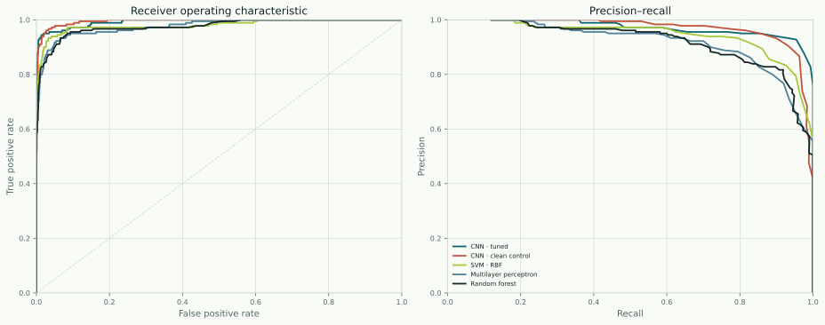

Ranking quality
ROC and precision–recall
Five leading and reference systems · designated test fits

Diagnostics · designated test seeds
The first five reference systems get full ranking curves. Choose any frozen model to inspect its threshold trade-offs and subgroup recall.
Ranking quality
Five leading and reference systems · designated test fits

Live test-score inspection
Changing the slider only reclassifies the already-frozen score vector. It does not refit or retune a model.
Chosen CNN · designated seed 44
Blue: non-drone · coral: drone

Subgroup recall